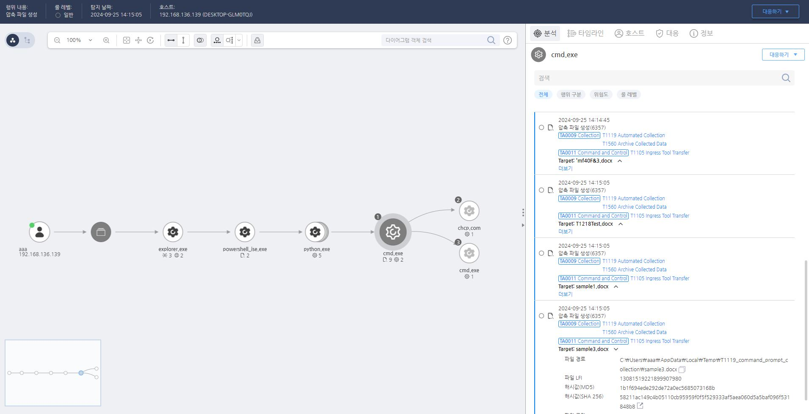

T1119.000.01 자동화된 파일 수집
D3FEND
MITRE ATT&CK 액션을 기준으로 대응 방안을 작성
Detection
프로세스의 파일 생성 행위를 모니터링하여 문서 파일을 특정 경로에 수집하는 행위를 탐지합니다.
Detection(EDR)

Response
해당 행위를 수행한 프로세스를 종료합니다.
Mitigations
최소 권한 원칙 적용 (M1026 - Privileged Account Management)
- 자동화된 스크립트나 프로세스가 시스템의 중요 정보를 수집하지 못하도록 최소 권한 원칙 적용
- 관리자 권한이 필요한 작업을 제한하고, 일반 사용자 계정에서는 중요 정보 접근을 차단
- 권한 분리(Segregation of Duties, SoD)를 적용하여, 한 사용자가 모든 정보에 접근할 수 없도록 설정
데이터 접근 제어 강화 (M1035 - Access Control)
- 민감한 파일 및 데이터에 대한 접근을 사용자 및 그룹별로 제한하여 불필요한 정보 수집 방지
- 네트워크 공유 폴더 및 클라우드 스토리지 접근 권한을 최소화
- 중요 시스템 로그 및 데이터 파일을 암호화하여 비인가된 접근 방지
비정상적인 자동화 활동 모니터링 (M1047 - System Logging & Monitoring)
- SIEM(Security Information and Event Management) 시스템을 활용하여 비정상적인 자동화된 데이터 수집 활동 감지
- 로그 분석을 통해 대량의 파일 접근 및 데이터 수집이 발생하는지 지속적으로 모니터링
- Windows Event Logs, Sysmon, Linux auditd 등을 활용하여 스크립트 실행 및 프로세스 활동 감시
의심스러운 프로세스 및 스크립트 실행 차단 (M1038 - Execution Prevention)
- PowerShell, WMI, Bash 스크립트 실행을 제한하여 악성 코드가 자동화된 방식으로 데이터를 수집하지 못하도록 설정
- AppLocker, Windows Defender Application Control(WDAC), SELinux 등을 사용하여 의심스러운 실행 파일 및 스크립트 실행 차단
- 조직에서 사용하지 않는 자동화 도구 및 스크립트 언어 비활성화
DLP(Data Loss Prevention) 솔루션 적용 (M1029 - Data Backup & Protection)
- DLP(Data Loss Prevention) 솔루션을 활용하여 중요 데이터가 비인가된 방식으로 수집 및 외부 전송되지 않도록 차단
- 네트워크 및 USB 저장 장치로의 대량 데이터 이동을 감지 및 차단
- 중요 파일이 네트워크 드라이브, 이메일, 클라우드 스토리지로 전송되는지 감시
네트워크 트래픽 감시 및 필터링 (M1037 - Network Intrusion Prevention)
- IDS/IPS(Intrusion Detection & Prevention System)를 사용하여 비정상적인 데이터 수집 및 외부 전송 차단
- 자동화된 도구가 정보를 수집한 후 외부 서버로 전송하려는 네트워크 트래픽을 차단
- 이상 트래픽 탐지를 위해 Firewall 및 DNS 모니터링 강화
파일 무결성 모니터링(FIM) 적용 (M1049 - File Integrity Monitoring)
- 중요 시스템 파일 및 데이터 변경 사항을 실시간으로 감지하여 비인가된 자동화된 정보 수집을 차단
- 중요한 파일이 대량으로 복사되거나 이동되는 경우 관리자에게 경고하도록 설정
사용자 보안 교육 및 인식 제고 (M1019 - Awareness and Training)
- 직원들에게 자동화된 정보 수집 및 데이터 탈취 기술에 대한 보안 교육 실시
- 의심스러운 스크립트 실행, 자동화된 수집 행위 감지 시 즉시 보안팀에 보고하도록 훈련
- 사회공학적 기법을 이용한 자동화된 정보 수집(예: 악성 매크로, 자동 실행 스크립트 등)에 대한 경각심 고취
Affected Techniques
Action 실행시 함께 영향을 받는 다른 Techniqes
| D3FEND |
| D3-FIM File Integrity Monitoring |
| D3-SCA System Call Analysis |
| D3-FA File Analysis |